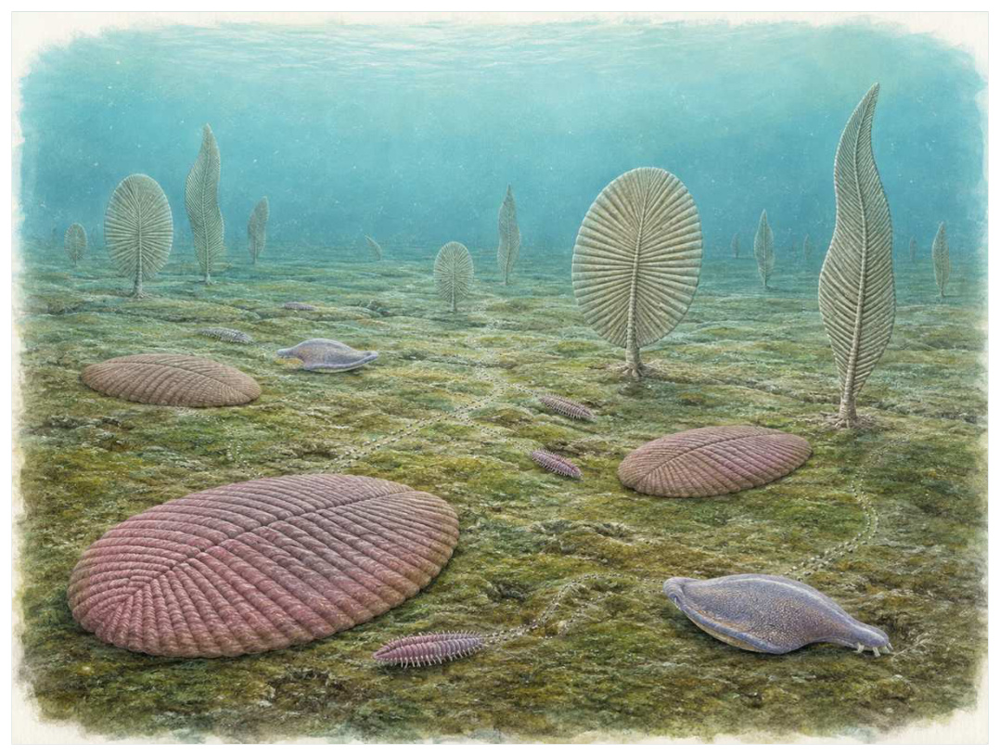

第03篇 · 埃迪卡拉纪：陌生的复杂生命 · 第 8 章
埃迪卡拉海底：一个没有现代对应物的世界
本篇主题:埃迪卡拉纪：陌生的复杂生命
在动物身体方案尚未定型之前，海底出现的巨大而难以分类的生命。

本章科学复原配图 （用于呈现结构与生态关系, 不替代化石照片、测量数据与系统发育证据。）
约5.75亿至5.41亿年前对应的世界与现代地图和气候都不同。理解它不能从一只明星物种开始，而应从整个系统的限制开始。埃迪卡拉生物群包括叶状、盘状、分节状和袋状形态。许多身体扁平而面积巨大，似乎依赖扩散、表面吸收或与微生物席的相互作用。它们并不是统一的‘埃迪卡拉门’，而是多个支系与生态策略的集合，其中一些可能接近动物，一些可能属于完全灭绝的真核生物分支。
进入这个时代
生态系统的真实声音不是巨兽咆哮，而是持续的摄食、分解、搬运和繁殖。每一具尸体、每一层落叶和每一次沉积扰动都会重新分配资源。你潜到昏暗海底，几乎看不到快速游动的捕食者。柔软沉积物被微生物席覆盖，叶状生物从底部固定点向上生长，扁平的Dickinsonia在席面留下移动和取食痕迹，零散管状动物开始建造硬壳。
在“埃迪卡拉海底：一个没有现代对应物的世界”所覆盖的时间里，不能把地理与气候当作固定背景。海陆位置、海平面、河流或植被结构会改变资源可达性，同一性状在不同地区可能得到完全相反的选择结果。
以埃迪卡拉海底：一个没有现代对应物的世界为例，亲缘与外形不能混为一谈。相似身体可能来自共同祖先，也可能来自趋同；过渡类型也不是两类动物的机械拼接，而是当时能够正常摄食、运动和繁殖的完整生物。 在本章中，这一约束具体落在“席面取食者刮取或外消化微生物层”这条关系上。
再从约5.75亿至5.41亿年前的时间尺度看，演化的单位是种群而不是单个英雄。个体结构影响生存，但地理分布、繁殖速度、幼体死亡率和种群规模决定变异能否保留下来。化石中最醒目的成年骨架，未必是决定支系命运的阶段。 它与“大型软体身体”共同决定了后续变化可以沿哪些路径发生。
生态系统如何运转
把“席面取食者刮取或外消化微生物层”放进食物网，可以看到它不是孤立行为。它会影响种群密度、栖息地使用和尸体进入分解链的速度，并把后果传给并未直接参与互动的物种。
围绕“席面取食者刮取或外消化微生物层”，还要考虑空间异质性。一项在浅海、河谷或林冠有效的策略，移到深水、干旱内陆或开阔地便可能失去优势。因此同一支系常出现区域性扩张，而不是全球同步取代。 对埃迪卡拉海底：一个没有现代对应物的世界而言，这一后果还会与“悬浮取食者把身体抬入水流”相互放大或抵消。
理解“悬浮取食者把身体抬入水流”需要区分个体事件与长期压力。偶然一次捕食只改变个体命运，持续数千代的稳定关系才可能推动牙齿、外壳、感觉器官或生活史发生方向性变化。
围绕“悬浮取食者把身体抬入水流”，这一机制也会留下间接证据：咬痕、修复伤、足迹密度、粪化石、牙齿磨损和群落年龄结构分别记录不同环节。只有多种证据方向一致，行为解释才应上调可信度。 对埃迪卡拉海底：一个没有现代对应物的世界而言，这一后果还会与“固着生物争夺离底高度和水流位置，移动能力仍有限”相互放大或抵消。
“固着生物争夺离底高度和水流位置，移动能力仍有限”还会改变可利用空间。一个支系若能进入新的水深、植被高度或沉积层，竞争会暂时减弱；随后追随者、捕食者和寄生者又会把新空间变成新的互动网络。
围绕“固着生物争夺离底高度和水流位置，移动能力仍有限”，从演化树看，相似关系可能在远亲中反复出现。功能相近不必意味着近缘，而同一祖先结构也可能被后代改作完全不同的用途；生态解释必须与系统发育互相校验。 对埃迪卡拉海底：一个没有现代对应物的世界而言，这一后果还会与“席面取食者刮取或外消化微生物层”相互放大或抵消。
关键演化创新
在“埃迪卡拉海底：一个没有现代对应物的世界”中，围绕“大型软体身体”，讨论“大型软体身体”时，最重要的问题是它解除哪一道限制。只要原有身体在运动、摄食、呼吸或繁殖上受约束，能够稍微缓解约束的变异就可能积累，最终产生看似跃迁的结果。 它首先需要在约5.75亿至5.41亿年前的生态条件下产生可测量收益。
就“大型软体身体”而言，化石能较可靠地记录硬组织形态，却很少直接保留基因调控与短时行为。因此结构出现通常可信，最初用途和选择路径则应按证据标为主流解释或合理推测。 本章把它与“分形生长”并列，是为了显示复杂性状往往依赖多部分协同。
在“埃迪卡拉海底：一个没有现代对应物的世界”中，围绕“分形生长”，从共同选择角度看，“分形生长”可能先服务旧功能，后来才参与今天最熟悉的用途。把最终功能倒推成起源原因，会把演化误写成有目的的工程。 它首先需要在约5.75亿至5.41亿年前的生态条件下产生可测量收益。
就“分形生长”而言，其宏观影响往往滞后于结构起源。一个创新可以先在小型、稀少支系中存在数百万年，直到环境变化或竞争者灭绝后才迅速扩张；“出现”和“成为主导”是两个不同事件。 本章把它与“定向移动与表面取食”并列，是为了显示复杂性状往往依赖多部分协同。
在“埃迪卡拉海底：一个没有现代对应物的世界”中，围绕“定向移动与表面取食”，讨论“定向移动与表面取食”时，最重要的问题是它解除哪一道限制。只要原有身体在运动、摄食、呼吸或繁殖上受约束，能够稍微缓解约束的变异就可能积累，最终产生看似跃迁的结果。 它首先需要在约5.75亿至5.41亿年前的生态条件下产生可测量收益。
就“定向移动与表面取食”而言，这也提醒我们不要寻找单一关键基因。复杂性状由多个组织和调控网络协调，改变任何一环都可能产生不同结果，演化路径因此呈树状而非直线。 本章把它与“大型软体身体”并列，是为了显示复杂性状往往依赖多部分协同。
生命群像：把物种放回生态网络
狄更逊水母（Dickinsonia）
狄更逊水母（Dickinsonia）是约5.58亿至5.5亿年前的一名真实生态成员，而不是通往后代的抽象过渡。它约有常为数厘米，个别超过一米，以可移动的席面取食者的方式获取资源；双侧重复单元、移动取食痕迹和胆固醇类甾体支持其动物属性反映了其祖先历史与局部选择压力共同留下的结果。
对狄更逊水母而言，它既可能是捕食者、植食者或工程者，也同时是其他生物的猎物、竞争者和分解资源。一次取食只是一瞬，长期生态影响来自成千上万个体反复搬运营养、改变植被或扰动沉积物。体型越大，这种工程效应通常越明显，但恢复速度也常越慢。 这使“双侧重复单元、移动取食痕迹和胆固醇类甾体支持其动物属性”不能脱离其可移动的席面取食者角色来理解。
判断它的生活方式时，研究者首先使用它位于动物树上的精确位置仍不确定，身体单元也不等同现代分节。随后会检验替代解释：同样的牙是否也能处理其他食物，同样的骨骼比例是否由年龄造成，同一骨层是否来自群体生活还是灾难性聚集。排除过程比贴标签更重要。
由狄更逊水母这个案例看，过去的复原常受完整现代动物模板影响，新材料则迫使研究者接受更陌生的身体比例或生活方式。最稳妥的表达是保留估计区间，并明确哪些软组织、颜色和社会行为仍属合理推测。 它在约5.58亿至5.5亿年前留下的记录，因此同时是第8章所讨论的形态史和生态史的一部分。
查恩盘虫（Charnia）
若把镜头从时代拉近到个体，查恩盘虫（Charnia）会首先进入视野。它生活于约5.75亿至5.5亿年前，体型约厘米至两米级叶状。作为固定于海底、可能从水体或共生体获得营养，它依靠分形式枝片最大化表面积，是阿瓦隆群落的标志与环境和其他生物发生关系。
对查恩盘虫而言，成年体型往往主导复原，但幼体可能使用完全不同的食物和栖息地。若成长阶段跨越多个生态位，种群就同时依赖多套环境；其中任一环节中断都可能导致长期衰退。化石骨床的年龄结构因此比单具最大标本更能说明生态。 这使“分形式枝片最大化表面积，是阿瓦隆群落的标志”不能脱离其固定于海底、可能从水体或共生体获得营养角色来理解。
关于它的直接依据是：缺乏口和肠道证据，摄食机制与亲缘关系争议较大。研究者还必须确认骨骼是否属于同一个体、是否被水流搬运、压扁是否改变比例，以及不同大小是否只是成长阶段。只有解剖、地层和功能证据相互一致，复原才可上调为高可信。
由查恩盘虫这个案例看，它在生命史中的价值不在于离现代形态还有多远，而在于证明这一身体组合曾真实可行。即使没有直系后代，支系也可能在当时持续繁盛，并通过捕食、植食或栖息地工程改变其他生命的选择环境。 它在约5.75亿至5.5亿年前留下的记录，因此同时是第8章所讨论的形态史和生态史的一部分。
金伯拉虫（Kimberella）
金伯拉虫（Kimberella）存在于见本章时代范围。现有材料显示其大小约通常数厘米至十余厘米，生态位置接近会移动并刮取微生物席的底栖动物。扇形刮痕和左右对称身体常被视为接近软体动物的证据让它成为理解本章主题的合适案例，但不意味着同一类群所有成员都采用相同策略。
对金伯拉虫而言，这种生活方式还会反向塑造环境。摄食改变植物或猎物结构，足迹和掘穴改变沉积，尸体和排泄物把营养集中到局部。生态位不是它进入的固定房间，而是它与其他生物共同建造并持续修改的关系网络。 这使“扇形刮痕和左右对称身体常被视为接近软体动物的证据”不能脱离其会移动并刮取微生物席的底栖动物角色来理解。
现有认识建立在是否属于软体动物冠群尚无定论，但动物属性较强之上。古生物学的可信度不是来自一件戏剧化标本，而是来自多件标本、多个地点和不同方法得到相容结果。新发现若改变比例或分类，并非此前研究毫无价值，而是证据边界被重新画清。
由金伯拉虫这个案例看，从生态尺度看，它与本章其他成员共同维持一张网络。任何“最强”排名都会遗漏资源供应、幼体死亡、疾病和气候脉冲；真正决定长期成功的是种群能否在波动中不断完成繁殖。 它在见本章时代范围留下的记录，因此同时是第8章所讨论的形态史和生态史的一部分。
斯普里格蠕虫（Spriggina）
在见本章时代范围，斯普里格蠕虫（Spriggina）以约约3至5厘米常见的身体参与食物网。它不是孤立的“明星生物”，而是底栖移动者或席面生活者；头尾分化和两侧重复结构使其常被拿来与环节动物或节肢动物比较决定它能利用哪些资源，也决定必须承担哪些成本。
对斯普里格蠕虫而言，相似环境可能让远亲出现相近轮廓，但内部结构会保留祖先限制。比较它与现代类比时，应只借用可检验的功能，不把现代动物的行为、社会制度或代谢水平整套复制到古生物身上。 这使“头尾分化和两侧重复结构使其常被拿来与环节动物或节肢动物比较”不能脱离其底栖移动者或席面生活者角色来理解。
支持该解释的材料包括其单元呈错位排列，现代类群对应关系仍十分不稳。若不同证据出现冲突，应优先报告范围而不是强行给出单值。例如体长会随参照类群变化，运动能力会随软组织假设变化，系统位置也会随新增性状重新计算。
由斯普里格蠕虫这个案例看，它也展示专门化的双面性：结构在稳定环境中提高效率，却可能在气候、食物或竞争格局突变时限制转向。灭绝不是对设计的道德评分，而是性状、地理范围和偶然事件相遇后的历史结果。 它在见本章时代范围留下的记录，因此同时是第8章所讨论的形态史和生态史的一部分。
三分盘虫（Tribrachidium）
认识三分盘虫（Tribrachidium）要先放弃静态骨架印象。它生活在见本章时代范围，约数厘米，日常任务是作为静止于海底、可能利用水流输送食物维持能量与繁殖。罕见三辐对称显示埃迪卡拉时期存在后来少见的身体组织方式只是这一整套生活史中最容易化石化的部分。
对三分盘虫而言，它既可能是捕食者、植食者或工程者，也同时是其他生物的猎物、竞争者和分解资源。一次取食只是一瞬，长期生态影响来自成千上万个体反复搬运营养、改变植被或扰动沉积物。体型越大，这种工程效应通常越明显，但恢复速度也常越慢。 这使“罕见三辐对称显示埃迪卡拉时期存在后来少见的身体组织方式”不能脱离其静止于海底、可能利用水流输送食物角色来理解。
我们之所以能够作出上述判断，主要因为流体模型支持悬浮取食可能，但没有保存软体器官。单一结构通常有多种功能解释，所以还要查看磨损、病理、肌肉附着、沉积环境和近缘比较。计算模型能排除不可能姿势，却不能自动恢复没有保存的软组织。
由三分盘虫这个案例看，面对仍有争议的细节，负责任的复原不是停止讲述，而是标注证据等级。形态、年代和亲缘可较确定，具体姿势、叫声、求偶和群猎则按材料降级；新标本会在这些边界内继续改写认识。 它在见本章时代范围留下的记录，因此同时是第8章所讨论的形态史和生态史的一部分。
兰吉亚（Rangea）
兰吉亚（Rangea）生活在见本章时代范围，已知体型约为厘米至几十厘米。它在群落中的角色可概括为固着叶状生物。最值得观察的结构是由多个分形模块组成，可能半埋在沉积物中。这些结构不是为了后来时代而准备，而是在当时直接影响摄食、运动、防御或繁殖。
对兰吉亚而言，成年体型往往主导复原，但幼体可能使用完全不同的食物和栖息地。若成长阶段跨越多个生态位，种群就同时依赖多套环境；其中任一环节中断都可能导致长期衰退。化石骨床的年龄结构因此比单具最大标本更能说明生态。这使“由多个分形模块组成，可能半埋在沉积物中”不能脱离其固着叶状生物角色来理解。
其复原依赖不同复原对埋藏姿态和营养方式意见不一。年代和保存形态通常属于较强证据，体重、速度、颜色和社会行为则需要额外假设。书中把这些层次拆开，是为了让读者知道哪些可视为事实，哪些仍应等待更多材料。
由兰吉亚这个案例看，它不是祖先链条上必须跨过的一格。演化树中同时存在许多近缘支系，只有少数留下后代；旁支化石同样关键，因为它们显示某组性状出现的顺序和可行范围。 它在见本章时代范围留下的记录，因此同时是第8章所讨论的形态史和生态史的一部分。
因果链：环境、生态与性状
把“大型软体身体”拆成成本与收益，可以避免把演化创新写成无条件升级。它可能扩大摄食、运动或繁殖的边界，却要付出组织材料、发育协调和日常维持的代价；“分形生长”又会改变这笔账在不同生命阶段的分配。对狄更逊水母而言，双侧重复单元、移动取食痕迹和胆固醇类甾体支持其动物属性在成年阶段或许十分醒目，但种群能否延续仍取决于幼体是否能找到食物、是否有安全的生长场所以及环境波动后是否保留繁殖者。化石往往偏爱成年硬组织，因此书写约5.75亿至5.41亿年前时必须主动补上这些不易保存却决定长期命运的环节。
从时间顺序看，“大型软体身体”的最早记录不等于它立即改写生态系统。结构可能先以小幅变异出现在稀少支系中，经历很长的试验期，直到“席面取食者刮取或外消化微生物层”所代表的资源条件或竞争格局改变，才出现可见的辐射。反过来，一个支系在化石记录中突然繁盛，也不证明关键结构刚刚产生；保存窗口打开、地理扩散或生态位释放都能造成类似图景。因此讨论约5.75亿至5.41亿年前的创新时，本章把“首次出现”“功能完善”“多样化”和“成为生态主导”分成四个问题，避免用一个日期替代整段历史。
在约5.75亿至5.41亿年前，身体不是若干部件的简单相加。“大型软体身体”只有与“定向移动与表面取食”在供能、控制和发育上兼容，才可能稳定遗传；局部性能提高若超过呼吸、循环或支撑能力，整体反而失效。金伯拉虫的扇形刮痕和左右对称身体常被视为接近软体动物的证据因此应放进完整身体比例中解释，而不是把某一器官单独夸大。生物力学模型可以估算受力和运动范围，组织学能限制生长速度，近缘比较能提示同源关系；三者相互校验，才有可能从静态化石走向一个能够活着完成日常活动的动物或植物。
种群层面的成功还要考虑波动，而不仅是平均状态。在资源丰富年份，“分形生长”带来的高性能可能迅速增加个体数；在低谷年份，维持该结构的成本又会放大死亡。若查恩盘虫拥有较广食谱或可迁移，便可能跨过低谷；若其分形式枝片最大化表面积，是阿瓦隆群落的标志高度依赖单一环境，恢复就更困难。化石群落中的丰度峰值、体型变化和地理收缩能为这种“繁荣—压力—恢复”循环提供线索，但必须与采样偏差区分。对约5.75亿至5.41亿年前的任何稳态描述，都只是长期波动中被岩层保存的一小段。
本章的因果链最终落在繁殖上。“悬浮取食者把身体抬入水流”改变个体获得资源和避开风险的方式，“大型软体身体”改变身体能做什么，但只有这些差异持续影响配子、胚胎、幼体和成体留下后代的概率，演化频率才会跨世代变化。狄更逊水母和查恩盘虫的化石常让人关注尺寸或武器，然而巢、蛋、芽孢、孢粉、幼体壳和成长线往往更接近选择真正发生的位置。理解埃迪卡拉海底：一个没有现代对应物的世界，因此要把最壮观的成年结构重新接回完整生活史。
时代横截面：个体、种群与证据
证据强度也应逐句区分。尸体印痕和底面铸型记录软体外形若直接记录形态或行为痕迹，可把某些可能性排除；连续移动痕迹把个体与行为联系起来若来自模型或现代类比，则通常提供范围而非唯一答案。对金伯拉虫的扇形刮痕和左右对称身体常被视为接近软体动物的证据，我们也许能高可信地描述结构，却只能以主流解释讨论功能，以合理推测讨论日常行为。把层级写出来不会削弱故事，反而让读者知道未来新发现最可能改动哪一部分。
把结构看作模块，可以解释为什么过渡类型常显得“新旧并存”。狄更逊水母的双侧重复单元、移动取食痕迹和胆固醇类甾体支持其动物属性可能已经接近后来状态，而呼吸、繁殖或运动的其他部分仍保留祖征；查恩盘虫可能采用另一种组合达到相似功能。演化不要求所有部件同步改变，只要求每个阶段的完整个体能够生活和繁殖。正因如此，真实谱系会产生旁支、回退和多次独立试验，而不是教科书式直梯。
再把金伯拉虫加入横截面，群落关系会从两者比较变成网络。它作为会移动并刮取微生物席的底栖动物，通过扇形刮痕和左右对称身体常被视为接近软体动物的证据连接资源与其他消费者；其数量变化可能同时影响狄更逊水母和查恩盘虫，甚至改变分解链和营养循环。这样的间接效应很少能由一具骨架直接证明，却可以从物种共现、丰度、痕迹化石和环境指标中受到约束。埃迪卡拉海底：一个没有现代对应物的世界的生态复原因此需要群落数据，而不只是著名标本的精细解剖。
地理同样会拆散看似整齐的时代标签。约5.75亿至5.41亿年前并不是全球同时拥有同一种气候与群落：海盆深浅、纬度、山脉、河流和大陆隔离会让狄更逊水母、查恩盘虫与金伯拉虫的分布错开。一个支系可能在某地区衰退、在另一地区成为避难所；后来扩散又会造成化石记录中的“重新出现”。因此本章的代表物种用于说明机制，而不意味着它们都在同一地点同一时刻相遇。
“谁取代了谁”常把复杂过程压成单线叙事。在埃迪卡拉海底：一个没有现代对应物的世界中，即使查恩盘虫在某层位后减少、金伯拉虫随后增加，也可能是二者分别响应气候或栖息地，而不是直接竞争导致淘汰。需要检查时间误差、地理重叠和资源相似度；只有三者都支持，替代关系才更可信。更多时候，生态系统通过功能重新组合过渡，旧支系与新支系会长期并存。
科学家为什么这样判断
“尸体印痕和底面铸型记录软体外形”提供的是一类约束而非完整录像。它可能精确记录某一瞬间，却未必代表全年或整个物种；也可能反映长期平均，却无法指出单次行为。把不同时间尺度的证据组合，才能重建生态过程。
“连续移动痕迹把个体与行为联系起来”还需要与年代学绑定。只有事件先后关系可靠，才能讨论因果；若环境变化和生物响应的误差范围大量重叠，就应表述为相关或可能机制，而不是宣布已经证明。
“有机分子和生长序列用于检验动物属性”最有价值的地方，是它能排除某些流行复原。关节不允许的姿势、承重无法支持的速度、与沉积环境冲突的生活方式，都可以被证据淘汰；剩余模型仍可能不止一个。
在“埃迪卡拉海底：一个没有现代对应物的世界”这一问题上，把上述方法合在一起，研究者才能从残缺材料走向受约束的复原。任何一条证据都可能受到成岩、污染、样本量或现代类比的限制；结论越具体，越需要多条独立证据指向同一方向，并与约5.75亿至5.41亿年前的地层背景相容。
过去的图景与今天的证据
外形相似不等于亲缘相近。分节、左右对称和叶状轮廓可由不同发育方式产生。把所有陌生形态都称为‘失败动物’既不科学，也忽视它们在当时可能持续数千万年的成功。
围绕“埃迪卡拉海底：一个没有现代对应物的世界”，需要特别警惕新闻标题把“可能”“支持”改写成“已经证明”。古生物学很少能直接观察行为，越接近颜色、叫声、群居和捕猎策略，越应说明样本数量与替代解释。
对约5.75亿至5.41亿年前的材料而言，争议持续还因为不同问题需要不同尺度。个体生物力学、种群生态和全球气候模型无法互相替代；一个模型能解释骨骼受力，不等于已经解释整个支系为何扩张或灭绝。
跨尺度观察
微生物底盘：宏体生态依赖微生物完成分解、固氮和碳硫循环。即使章节聚焦巨型动物，尸体最终仍由微生物和小型分解者处理；大灭绝后的恢复也往往先表现为生产和分解网络重建，而非大型动物立即回归。 在“埃迪卡拉海底：一个没有现代对应物的世界”中，这一尺度具体连接了“席面取食者刮取或外消化微生物层”与“大型软体身体”，因而不能只从单个成年标本判断。
尺度错觉：百万年足以让微小遗传差异累积成巨大的身体变化，数万年的快速事件又可在地质记录中近似一条细线。把深时间压缩会制造“突然出现”的错觉，因此正文同时报告持续时间和证据分辨率。 在“埃迪卡拉海底：一个没有现代对应物的世界”中，这一尺度具体连接了“悬浮取食者把身体抬入水流”与“分形生长”，因而不能只从单个成年标本判断。
能量账本：任何大型身体、快速运动或高代谢都必须由初级生产支撑。食物从生产者进入消费者时会损失大量能量，因此顶级捕食者种群必然远少于猎物。环境变化若先削弱生产端，高营养级通常最早出现繁殖失败；这比单次搏斗更能决定支系命运。在“埃迪卡拉海底：一个没有现代对应物的世界”中，这一尺度具体连接了“固着生物争夺离底高度和水流位置，移动能力仍有限”与“定向移动与表面取食”，因而不能只从单个成年标本判断。
通向下一个时代
从本章走向下一阶段时，需要保留的不是一串物种名，而是一个因果链：环境改变可用能量与栖息地，生态关系筛选性状，性状又反过来改造环境。埃迪卡拉末期，掘穴、捕食和生物矿化增强，席状海底逐渐被扰动。旧生态没有在一个夜晚消失，却被新的行为模式从根部改变。
本章精选来源
- [R17] Hoffman, P. F. et al. A Neoproterozoic Snowball Earth. Science 281, 1342-1346 (1998).
- [R22] Bobrovskiy, I. et al. Ancient steroids establish the Ediacaran fossil Dickinsonia as one of the earliest animals. Science 361, 1246-1249 (2018).
- [R23] Fedonkin, M. A. et al. The Rise of Animals: Evolution and Diversification of the Kingdom Animalia. Johns Hopkins University Press, 2007.
- [R24] Darroch, S. A. F. et al. A mixed Ediacaran-metazoan assemblage from the Zaris Sub-basin, Namibia. Palaeogeography, Palaeoclimatology, Palaeoecology 459, 198-208 (2016).
- [R25] Shore, A. J. et al. Ediacaran metazoan reveals lophotrochozoan affinity and deepens root of Cambrian explosion. Science Advances 7, eabf2933 (2021).